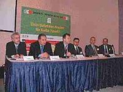

|
Dr.
Tarýk Öðüt, Genel Müdür, Figes Ltd. Þti
Mustafa Ceran, YKB, ÝnFoma Þirketler Grubu
Mustafa Manavoðlu, Ürün Geliþtirme Md., Eczacýbaþý Artema
Süleyman Müftüoðlu, PLM Çözümleri Yön., IBM Türk A.Þ.
Özgür Þenel, Gen. Md., Boðaziçi Yazýlým A.Þ.
WIN
Fuarlarý Paneli
28 Þubat 2003
Ýstanbul
Aþaðýda,
WIN 2003 Fuarlarý (www.win-fair.com)
Endüstriyel Etkinlikleri kapsamýnda yapýlan "Ürün geliþtirme
araçlarý ne kadar yararlý" konulu bir panele katýlanlarýn
konuþmalarý yer almaktadýr.
Dr.
Tarýk Öðüt (Mak. Müh.) , Figes Ltd. Þti Genel Müdürü:
Figes,
sonlu elemanlar analizi ve benzeri teknolojileri konusunda
1990 yýlýndan beri hizmet sunan bir firma...
Ürün
geliþtirmenin tasarým, hesap, üretim, kalite kontrol gibi
kýsýmlarý bulunuyor. Biz bu sürecin "hesap" tarafýnda bulunuyoruz.
Yani iþin fizik disiplinine dahil olan, mukavemet, ýsý transferi,
akýþkanlar dinamiði gibi konularda hizmet sunuyoruz.
Bu
teknolojileri etkin kullanma iþin püf noktasý. Zira teknolojileri
tüm dünya kullanýyor. Bunlarýn gerekliliðini tartýþmanýn hiçbir
anlamý yok.
Türkiye'de
bunlara randýmanlý kullanýlýyor mu sorusuna gönül rahatlýðýyla
"evet" cevabý veremiyoruz. Firmalara göre deðiþkenlik gösterse
de, ortalama deðerler istenen düzeyde deðil. Bunun nedeni
ülkemizde bu kültürün yerleþememiþ olmasýndandýr.
Ürün
geliþtirme teknolojileri ilk kez, yaklaþýk 10 yýl önce kullanýlmaya
baþlandý. Ve bir yol kat edildi. Ancak çalýþmaya her baþlayan
firma, alanýnda "öncü" rolü üstlenmek zorunda kaldýlar. Genç
mühendisler çalýþtýklarý alanda, daha önce bir birikim elde
edemediðinden her þeyi kendi kendine keþfetmek zorunda kaldýlar.
Önce birikim elde edip sonra firmalarýna katkýda bulunmalarý
gerekiyordu. Bu da elbette zamana yayýlan; en azýndan 3-4
yýllýk bir süreç. Büyük firmalarda bu süreç daha hýzlý kat
edilse de küçük firmalar için ayný þeyi söyleyebilmemiz mümkün
deðil. Fakat bu bizim moralimizi bozmamalý. Yeni teknolojilerin
yerleþtiði her ülkede, bu aþamalardan geçilmiþ ve sonra belirli
noktalarda gelinmiþ.
Teknolojilerin
etkin kullanýmý için bunlarý sunan firmalar olarak biz de
çok çaba sarf ediyoruz. Gelinen noktaya baktýðýmýzda daha
kat edilmesi gereken çok mesafe olduðu da açýk...
Mustafa
Ceran, ÝnFoma Þirketler Grubu Yönetim Kurulu Baþkaný (Ýnformatik'in
Kurucusu):
1988
yýlýndan beri faaliyet gösteriyoruz. Burada konuþtuðumuz teknoloji
ve üretim süreçleri Türkiye'de bir "gönül meselesi" olmuþtur.
Tezgahlarý baþýnda çalýþan veya burada görüþlerini dile getiren
insanlar, Türkiye'nin endüstriyel sahada bir yere gelebilmesini
gönül meselesi yapmýþlardýr. MakinaTek dergisinin, Bileþim
Fuarcýlýk'ýn düzenlediði WIN Fuarlarý'nýn çabalarýný da bu
kapsamda deðerlendirmemiz gerekir. Konuya sahip çýkmak, su
üstünde kalmasýný saðlamak takdire deðer çabalardýr.
Ürün
geliþtirme konusuna iki boyutta bakmamýz gerekir. Birincisi
fiziksel; herhangi bir ürünün konseptten nihai elle tutulur
bir ürün haline getirme süreci var. Süreç içersinde genelde
Ar-Ge ve ürün geliþtirme departmanlarýnda yürüyen bir faaliyet
bu. Diyelim çok iyi konseptlere veya ürünlere sahipsiniz.
O zaman mesele çözülüyor mu? Hayýr. Sürecin bir baþka boyutu
var. Bu sonuçta birtakým ihtiyaçlara cevap vermek üzere ortaya
çýkan bir üretim süreci.
Yani
üretilecek malzemenin bir þeylerin bir parçasý olma sonucu
vardýr. Dolayýsýyla ürün, bir organizasyonun organik bir parçasýdýr.
Ürün odaklý bir organizasyon söz konusudur burada. Örneðin
Mercedes bir organizasyon deðildir. Üründen, teknolojisinden
dolayý bir organizasyondur.
Dolayýsýyla
ürün odaklý bu organizasyona baktýðýmýz zaman, her ürünün
baþlangýçtan sonuna kadar, yani insan hayatýnda olduðu gibi
doðumundan ölümüne kadar yürüyen birtakým "yaþamçevrimi" dediðimiz
süreçler vardýr.
Ürün
geliþtirme sürecinde alýnmasý gereken bazý tedbirler olmakla
birlikte, þu anda dünya piyasasýnda gelinen teknolojiye baktýðýmýz
zaman, "tepeden gören" büyük resme bakan bir boyuta gelinmiþtir.
Küçük resme bakýp, oraya odaklanýp, kaliteli ürünler üretmek
artýk yeterli gelmemektedir. Ürün üretim süreçlerinde ciddi
boyutlarda deðiþiklikler yaþanmýþtýr. Bir arabanýn tasarým
masasýndan asfalta inme süresi, bundan 20 yýl kadar önce 15
yýllýk bir sürece yayýlýrken, bugün tahmin ediyorum bu süreler
3 yýla kadar düþmüþ durumda.
Burada
adres etmek istediðim nokta, üretim sürecidir. Üretim süreci
içindeki Ar-Ge faaliyetlerinin, belirli bir kaliteye ve otomasyona
eriþmesi gerekir.
Bu
otomasyon ve kalite, verimliliðin artmasý için gerekli olan
þartlardýr. Diðer tarafta bu geliþtirilmiþ tasarýmýn imalat
süreci baþlýyor. Bu süreç içersinde kalite kontrol, satýnalma,
metot geliþtirme, tedarik zincirleri ortaya çýkýyor. Hele
bir de bu ürünlerle artýk sadece "kendi mahallenizde" deðil
de dünya piyasasýnda var olma mecburiyetiniz varsa, bu anlattýklarýmýz
daha bir önem kazanýr.
Infoma
Grubu olarak baktýðýmýzda, Türkiye'ye ilk geldiðimiz günden
itibaren hedefimiz daha çok üretim ve bunun için daha çok
teknolojik kullanýmý idi.
Þimdi
gelinen noktada bu yarýþýn neresindeyiz diye sormamýz gerekiyor?
Yýllardýr
ürün geliþtirmede Ar-Ge departmanlarýna konsantre olarak,
Ar-Ge bilincini yaymaya çalýþan basýnýn, üniversitelerin,
bu panel masasý etrafýnda toplanan ve burada bulunmayan firmalarýn
çabalarýyla belirli bir yere gelindi. Artýk bu ürün geliþtirme
sürecini, "ürün yaþamçevrimi" sürecine uyarlamamýz gerekiyor.
Bu,
dünya piyasasýnda odaklanan en önemli teknolojik geliþmedir.
Ürünün, bir taraftan kendi içinde konseptten sonuca ulaþtýrýlýrken,
diðer taraftan üretim süreci içinde, yaþam süreci içinde bir
baþka boyut daha önem kazanýyor. Ürünü piyasaya veriyorsunuz
ama bu ürün hemen ölmüyor. Örneðin bir arabanýn piyasada yaþama
süreci olarak 5-10 yýl gibi bir süreç bulunuyor.
Demek
ki bakým ve destek süreçlerini gözetmek gerekiyor. Þimdi,
bütün bunlarýn yönetilmesi, bir organizasyonun ayakta kalmasý
için almasý gereken ön hedeflerin temel þartlarýdýr.
Bu
noktalarý atlayýp sadece ürün geliþtirmeye odaklandýðýnýz
zaman, baþarýlý olma þansýnýz fazla olmayacaktýr.
Bu
noktalarý içine alacak þekilde organize olmak, bütün bu prensipleri,
fonksiyonlarý birleþtirecek bir çalýþma içersine endekslenmek
için, dünyada geliþtirilmiþ son derece baþarýlý teknolojiler
var.
Biz
bu teknolojilere sahip çýkmalý ve ülkemize kazandýrmalýyýz.
Burada verilmiþ olan 10-15 yýllýk süreç ve CAD-CAM sektörüne
emek vermiþ insanlarýn gayretleri, pazarý belirli bir noktaya
getirmiþtir. Bu ilerlemelere raðmen dünya piyasasýyla kýyaslayacak
olursak, iþin üretim yani CNC tarafýna çok fazla aðýrlýk vermiþ
olduðumuzu anlýyoruz. Ýþin konseptüel tarafýnda bir miktar
güdük kalmýþýz.
O
nedenle Türkiye bir CNC cenneti olmuþtur. Bunun gerekçeleri
elbette bulunabilir.
Öðrenmenin
iki yolu vardýr. Bir tanesi araþtýrma-geliþtirme; diðeri deneme-yanýlmadýr.
Maalesef ülkemiz deneme-yanýlma yolunu çok kullanan bir yapýya
sahiptir. Deneme-yanýlmanýn bir faydasý var; iyi öðrenirsiniz
ama uzun vadede ve pahalý bir yolla öðrenmiþ olursunuz.
Mustafa
Manavoðlu, Eczacýbaþý Yapý Gereçleri, Artema Ürün Geliþtirme
Müdürü:
Ürün
geliþtirme sürecinin içinde birçok argüman var. Bunlarýn içinde
önemli gördüðümüz üç kriter, hýz, maliyet ve kalitedir. Microsoft'un
patronu Bill Gates diyor ki "Dünyanýn en iyi þirketinin batmaya
uzaklýðý 18 aydýr". Teknoloji o kadar ilerledi ki firmalarýn
bu teknolojik uygulamalarýn dýþýnda kalmasý, bu 18 aylýk mesafeyi
biraz daha kýsaltabiliyor. Ürün geliþtirme sürecinin performans
parametrelerinde 3 nokta öne çýkmakta. Birincisi, pazara sunum
süresi. Yani bir ürünün kavramdan müþterinin eline ulaþýncaya
kadar geçen süre... Ýkincisi geliþtirdiðiniz ürün sayýsý.
Yani nitel ve nicel olarak müþteri beklentilerinin karþýlanýyor
olmasý. Hatta karþýlanmasý da yetmez, bu beklentilerin aþýlarak
karþýlanmasý gerekiyor. Üçüncüsü ise yeni ürünlerden elde
edilen cironun veya gelirin toplam ciroya oraný...
Hedef
8 haftada bir yeni ürün
Bizim
kuruluþ olarak geçirdiðimiz evrenin 1996 ile 2000 arasýndaki
bölümünü çarpýcý olabilir düþüncesiyle anlatmak istiyorum.
Biz 1996 yýlýnda 14 ürünü 100 haftada geliþtirebilecek bir
standarda sahiptik. 14 üründen oluþan iki seriyi, yaklaþýk
2 yýlda geliþtirebiliyorduk. 2002 yýlýnda geldiðimiz sonuçlara
göre ise 20 haftada 250 kadar ürün çýkarabiliyoruz ki hedefimiz
üç yýl içersinde bu süreleri, 8 haftaya kadar düþürebilmekte...
Böylece,
bir müþteri, sýfýrdan kavram aþamasýndan, istediði bir ürüne,
testleri yapýlmýþ olarak 8 haftada kavuþabilecek... Ürün geliþtirme
süreniz uzarsa yeni ürünlerden elde ettiðiniz cironun toplam
ciroya oraný gibi, ürünü pazara geç vermenin maliyetlerine
katlanýrsýnýz. Pazara ilk giren bu avantajýný deðerlendireceðinden
daha sonra yapýlacak pazar giriþlerinde o üründen elde edeceðiniz
gelirden mahrum kalýrsýnýz.
Þu
anda sektörden sektöre deðiþmekle birlikte yeni bir ürünü
geliþtirme süreci ortalama olarak 6 aydýr. Bizim sektörde
de bu rakam 1 yýlýn biraz altýndadýr. Yani 1 yýlý geçmeden
ilgili ürün baðlamýnda müþterinin kullanýmýný deðiþtirecek
yeni bir ürün veya kavram muhakkak çýkýyor.
Ürün
geliþtirmeyi iki çerçevede düþünmek lazým: Birincisi ürünü
kavramsal veya fonksiyonel olarak geliþtirmek, ikincisi geliþtirilen
ürünün tasarým uygulamasýný gerçekleþtirip seri imalata hazýr
hale getirmek.
Ýlk
aþamada muhakkak tasarým araçlarýný etkin olarak kullanmak
gerekiyor. Türkiye'de baktýðýmýz zaman, geçmiþle göre daha
etkin kullandýðýmýz kesin ama gerektiði kadar da etkin yararlandýðýmýz
söylenemez.
Burada
tasarým aracý ile kastettiðim sadece CAD/CAM programlarý deðil.
Kavram aþamasýndan müþteriye ulaþýncaya kadarki süreçte söz
konusu olan tüm araçlardan bahsediyorum...
Amaç
elbette ki kar elde etmektir; ürün geliþtirmek deðil! Ürün
geliþtirmek bir araçtýr. Siz aracý etkin kullanýrsanýz, aracýn
yaratýcýlýk ve yenilikçilik boyutundan daha çok yararlanýrsýnýz.
Zaten
pozisyon itibariyle ya rekabetçisiniz ya da rekabet üstüsünüz.
Rekabetçi bir yol izliyorsanýz elinizdeki silahlarý kullanarak
mücadelenin bir þekilde içinde yer alýrsýnýz. Eðer rekabet
üstü olduðunuzu; alanýnýzda öncü olduðunuzu düþünüyorsanýz,
ürün geliþtirme araçlarýný etkin kullanmanýz daha da bir önem
kazanýr. Yaratýcýlýk ve yenilikçilik boyutu misyon olarak
almýþ olmanýz lazýmdýr.
Alman
kökenli, alanýnda lider konumda olan bir firma yetkilisinin,
bir toplantýda anlattýklarýný aktararak sözlerimi bitirmek
istiyorum:
"Bizim
her yaptýðýmýz yeni ürün, en geç altý ay içinde dünyanýn bir
yerinde taklit edilir. Bu taklitlerin peþinde koþarak bir
yere varamýyoruz. O nedenle biz de kendimize 5 ayda bir yeni
ürün çýkarma hedefini koymak zorunda kaldýk..."
Süleyman
Müftüoðlu, IBM Türk, PLM Çözümleri Yöneticisi
PLM'i
Türkçe'ye Ürün Yaþamçevrimi Yönetimi olarak çevirdik. Öncelikle
tasarýmýn neden önemli olduðunu bahsetmek istiyorum. Aslýnda
siz, tasarým esnasýnda ürünle ilgili birçok þeyi zaten belirliyorsunuz.
Burada, maliyetin çok önemli olduðu söylendi. Maliyet yaklaþýk
yüzde 80 itibariyle tasarým esnasýnda þekillenen bir parametre.
Bilindiði gibi ürün yaþamý o ürün, üretici firma tarafýndan
tamamen ortadan kaldýrýldýktan sonra sona erer. Bu sona kadar
geçen süreçte tasarýmla yaratmýþ olduðunuz bilgiler ve içerik
de çok önemli. Bir ürünü çok parçalý olarak tasarlarsanýz
çok fazla parçayý satýn almak veya imal etmek durumundasýnýz.
Eðer tasarýmý baþtan uygun biçimde yapabilirseniz, ciddi kazanýmlar
elde etmeniz mümkün.
O
nedenle bir ürünü nasýl tasarladýðýnýz çok önemli. Öyle tasarýmlayabilirsiniz
ki denetimi ortadan kaldýrýyor olursunuz. Netice itibariyle
kalite denetimi ürüne deðer katan bir süreç deðildir. Bir
iþletme, tasarýmdaki bilgiyi satýþ sonrasý sürece ne kadar
aktarabilirse, orada yarattýðý geometriyi ve geometrinin etrafýndaki
veri temelini ne kadar satýþ sonrasýnda rekabetçi olarak kullanabilirse,
o kadar iyi sonuçlar elde etmez mi?
Tasarým,
imalat yapsan, tasarlayan veya bunun her ikisini de yapan
þirketler için önemli bir rekabet unsuru. Dolayýsýyla bu süreci
mekanize etmesini beklediðimiz rekabet araçlarý vazgeçilmez
konumdadýr.
Türkiye
açýsýnda da deðer yaratmak istiyorsak tasarým araçlarýnýn
yararlýlýðýndan þüphe etmeden azami ölçüde bunlarý kullanmalýyýz.
Türkiye eðer tasarýmla ilgili kabiliyetlerini bütün sektörlerde
geliþtirmezse, tasarým yapan bir þirket olmaktan ziyade, tasarlanmýþ
olan bir ürünün en iyi ihtimalle "imalat mühendisliði"ni yapacak
bir ülke durumuna düþer. Bu da, oldukça önemli bir gelirden
bizim feragat etmemiz anlamýna gelir, diye düþünüyorum. Türkiye'de
Eczacýbaþý Yapý, Arçelik, Otokar, BMC gibi kendi tasarýmýný
kendi yapan þirketler var.
Gönül
istiyor ki bu þirketlerin sayýlarý artsýn. Kullanan þirketler
araçlardan daha fazla yararlanabilsinler.
Türkiye'yi
deðerlendirirken bakýlmasý gereken ikinci bir eksenin de küreselleþme
olduðunu düþünüyorum. Küreselleþme nedeniyle Türkiye dünyada
kullanýlan tasarým araçlarýndan etkin biçimde yararlanmýyor
olamaz. Bu lükse sahip deðiliz.
Ýki
örnek vermek istiyorum. Ýlki Tofaþ'ýn geliþtirdiði Doblo.
Çok amaçlý ticari araç. Diðeri Ford Otomotiv tarafýndan geliþtirilen
Transit Connect . Her iki araç da Türk mühendislerin uluslar
arasý takýmlarla iþbirliði yapmasýyla ortaya çýkan, Türk mühendislerinin
diðer ülke mühendislerinden eksik hiçbir þeyinin olmadýðýný
da kanýtlayan projelerdir.
Artan
rekabet dolayýsýyla Türkiye küresel rekabet ortamýnda bir
þekilde yerini almalýdýr. Bu küresel projelerin yaný sýra
Arçelik, Otokar örneklerinde olduðu gibi, oldukça da kompleks
olan kendi ürünleri üzerinde küresel çalýþmalardan baðýmsýz
olarak, ulusal ihtiyaçlardan kaynaklanan ürün geliþtirme çalýþmalarý
baþarýyla yapmýþlardýr.
Tasarým
araçlarý içersinde sadece bilgisayar destekli tasarým dediðimiz
ürünlerle deðil ayný zamanda bu ürünleri PLM kategorisine
terfi ettiren Ürün Veri Yönetimi (ÜVY) yazýlýmlarýyla gerçekleþtiriyor.
ÜVY,
sanýrým tasarým araçlarýný yeni binyýla taþýyacaktýr.
Tasarým
araçlarý PDM, PLM olarak bir ekosistem içinde yer alýyorlar.
Ýþletme içersinde yeni rekabetçiliðe yönelik baþka uygulamalar
da var. Örneðin, firma kaynaklarý uygulamalarý, müþteri iliþkileri
yönetimi, tedarik zinciri yönetimi uygulamalarý... gibi. PLM
özellikle ürün odaklý çalýþmalarda bütün bu ekosistem içersindeki
uygulamalarda entegrasyona talip. Tabii kullanýcý adaylarýný
ikna edebildiði sürece...
Özgür
Þenel, (Endüstri Yüksek Mühendisi) Boðaziçi Yazýlým Genel
Müdürü:
Üretim
yapan bir sektördeysek ya bir son kullanýcýya ürün hazýrlýyoruz
demektir. Ya da bir ana endüstriye yardýmcý sanayi olarak
birtakým parçalar tasarlayýp üretiyoruz demektir. Artýk günümüzde
pazar o kadar geliþti ki, son kullanýcý son derece akýllý.
Kalite, görünüþ, dizayn unsurlarýný ayný anda gözetiyor. Üstelik
fiyatý da uygun olsun istiyor. Ana sanayi de yan sanayi firmalarýna
ayný istekleri yansýtýyor. Bütün bunlarý yaparken ürünü kýsa
sürede çýkarmalý, piyasaya kaliteli, estetik ve ucuz olarak
sunmalýsýnýz.
Tabii
ki bunlarý kullanmadan da bir ürünü üretebilirisiniz. Ancak
artýk bu ürün piyasada satýlabilir, kullanýlabilir olmaktan
çýkmýþtýr. Siz de firma olarak rekabet edebilir olmaktan uzaklaþýrsýnýz.
Bugün tartýþýlmasý gereken, ürün geliþtirme araçlarý faydalý
mýdýr sorusu yerine daha faydalý, daha efektif hale nasýl
getirilebilir sorusudur. Adý üstünde, ürün geliþtirme araçlarý,
birer araçtýr. Size zaman, malzeme, para, insan gücü alanlarýnda
yarar saðlayan araçlardýr. Dolayýsýyla yapýlan yatýrýmýn geri
dönüþü de çok daha çabuktur. Bu araçlar artýk günümüzde bizim
imalatçýlarýmýzýn kullanmak zorunda olduðu araçlardýr. Aksi
taktirde firmalar, küreselleþmenin, rekabetin bu kadar yoðun
olduðu ortamda yaþayamayacaktýr.
*
Not: Bu rapor ilk olarak Mart 2003 tarihli MakinaTek
Dergisi Sayý 65'de yayýnlanmýþtýr.
|